DaZ-Wortschatz In der Schule – differenziert A1/A2/B1: Hörszene (QR), Lückentexte, Rollenspiel

Steckbriefe Weltreligionen – Materialpaket (6 Religionen mit Symbolen, Festen und Gotteshäusern, differenziert, mit Lösungen)

Quali Mathematik 9 Probeprüfung Teil A und B mit Lösungen, Mittelschule Bayern

Steckbriefe Länder Amerikas – Materialpaket (12 Länder aus Nord-, Mittel- und Südamerika mit Flaggen, differenziert, mit Lösungen)

MSA Englisch Klasse 10 Probeprüfung: Reading, Mediation, Writing (B1) mit Lösungen

CE 02 Pflegefachfrau/-mann: Dekubitusprophylaxe: Druckgeschwüre erkennen und vermeiden – Übungen, Lösungen + Lernvideo

ESA Mathematik Klasse 9: Probeprüfung mit Alltagsaufgaben, Teil A und B, mit Lösungen

LF 2 Kaufleute für Büromanagement: Prioritäten setzen: Eisenhower und ALPEN im Büro – Übungen, Lösungen + Lernvideo

MSA Mathematik Klasse 10 Probeprüfung Teil A und B mit Lösungen, Farbe und SW

LF 3 Kfz-Mechatroniker/-in: Grundgrößen und ohmsches Gesetz im Kfz-Bordnetz – Übungen, Lösungen + Lernvideo
VERA 3 Mathematik Klasse 3 Probetest: Zahlen, Größen, Muster, Daten mit Lösungen
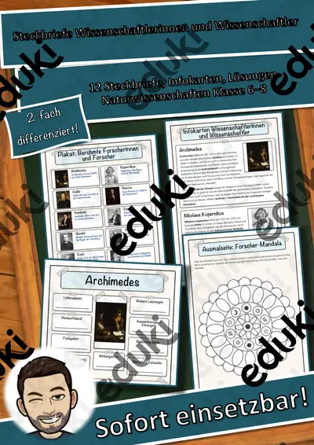
Steckbriefe Wissenschaftlerinnen und Wissenschaftler – Materialpaket (12 Forscher, differenziert, mit Lösungen)

VERA 8 Englisch Probetest Reading Klasse 8 – Leseverstehen A2/B1 mit Lösungen

Steckbriefe Erfinder und Erfindungen – Materialpaket (12 Erfinder, differenziert, mit Lösungen)
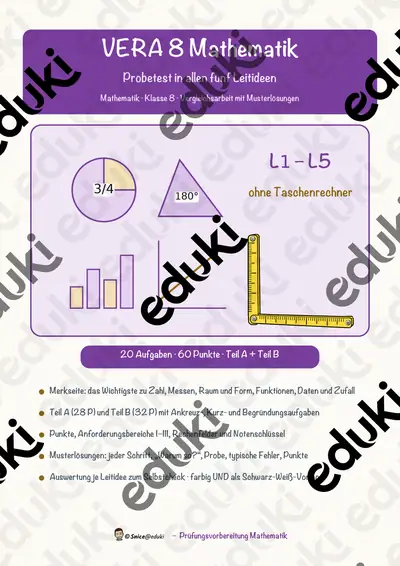
VERA 8 Mathematik – Probetest in allen fünf Leitideen (Klasse 8)

Steckbriefe Planeten - Materialpaket

Steckbriefe Komponisten – Materialpaket (12 Komponisten vom Barock bis zum Impressionismus, differenziert, mit Lösungen)
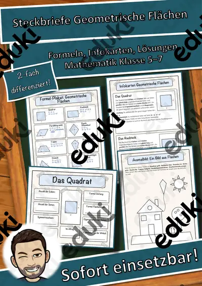
Steckbriefe Geometrische Flächen mit Formeln – Materialpaket (10 Flächen, differenziert, mit Lösungen)

Lunar New Year at Lin's Home – Lesespurgeschichte mit Rätselaufgaben auf Englisch (Klasse 8)
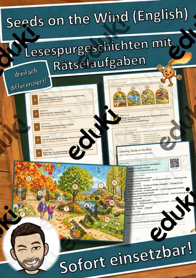
Seeds on the Wind - Complete Pack (BW)
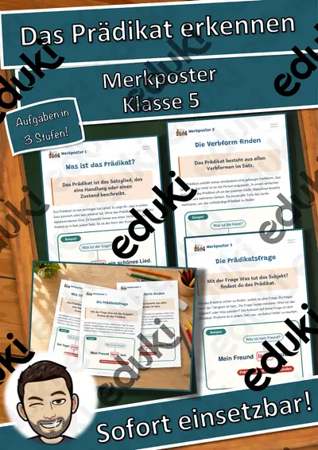
Das Prädikat erkennen – Merkposter (Klasse 5)
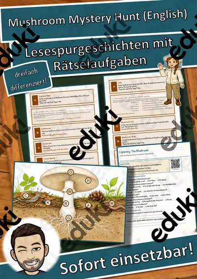
Mushroom Mystery Hunt - Complete Pack (BW)
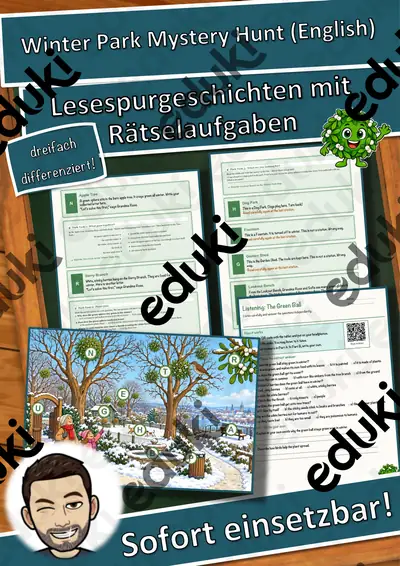
Winter Park Mystery Hunt - Complete Pack (BW)

Halloween Traditions in Ireland – Lesespurgeschichte mit Rätselaufgaben auf Englisch (Klasse 6)

The Apple Cellar – Lesespurgeschichte mit Rätselaufgaben auf Englisch (Klasse 6)
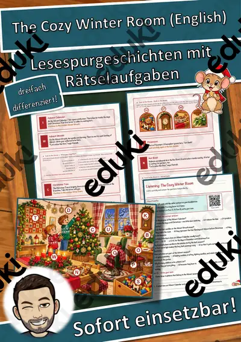
The Cozy Winter Room - Complete Pack (BW)

3D-Anhänger Schulanfang – Oktaeder, Diamant und Kugel zum Ausmalen und Basteln, 3-fach differenziert (Klasse 3/4)

3D-Anhänger Sommer – Oktaeder, Diamant und Kugel zum Ausmalen und Basteln, 3-fach differenziert (Klasse 3/4)

3D-Anhänger Ostern – Oktaeder, Diamant und Kugel zum Ausmalen und Basteln, 3-fach differenziert (Klasse 3/4)

3D-Anhänger Fasching – Oktaeder, Diamant und Kugel zum Ausmalen und Basteln, 3-fach differenziert (Klasse 3/4)

3D-Anhänger Frühling – Oktaeder, Diamant und Kugel zum Ausmalen und Basteln, 3-fach differenziert (Klasse 3/4)

3D-Anhänger Herzen und Muttertag – Oktaeder, Diamant und Kugel zum Ausmalen und Basteln, 3-fach differenziert (Klasse 3/4)
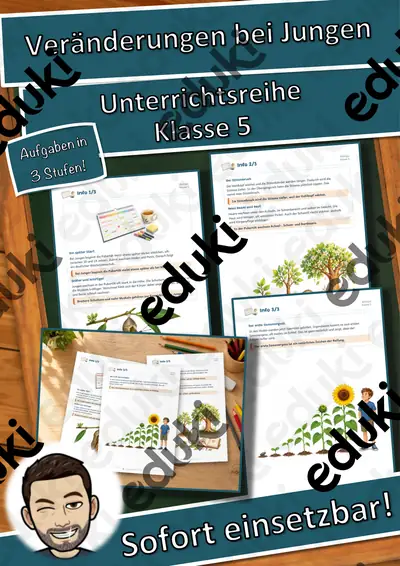
Veränderungen bei Jungen – Unterrichtsreihe (Klasse 5)
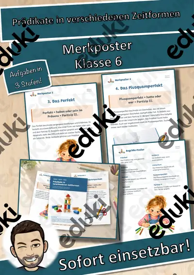
Prädikate in verschiedenen Zeitformen – Merkposter (Klasse 6)

Hormone steuern die Pubertät – Unterrichtsreihe (Klasse 6)

Der Ostermarkt – Rollenspiel Gewichte mit Brüchen ½ ¼ ¾ kg, 3-fach differenziert (Klasse 4)

Ostereiersuche im Garten – Rollenspiel Lagewörter und Zählen bis 20, 3-fach differenziert (Klasse 1)

Der Faschingsumzug – Rollenspiel Zeitspannen und Fahrplan, Anfang und Ende berechnen, 3-fach differenziert (Klasse 3)

Der Faschingsladen – Rollenspiel Kombinatorik und Rechnen mit Geld, 3-fach differenziert (Klasse 2)
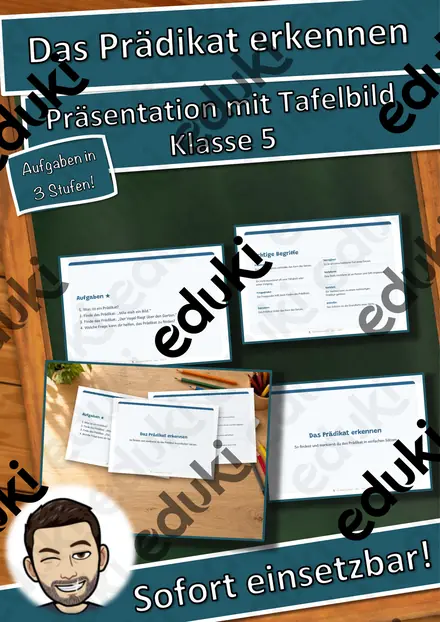
Das Prädikat erkennen – Präsentation mit Tafelbild (Klasse 5)
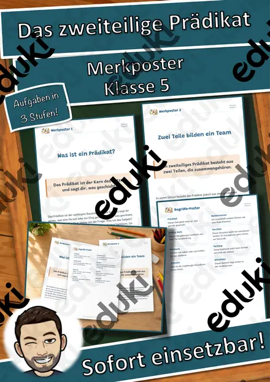
Das zweiteilige Prädikat – Merkposter (Klasse 5)
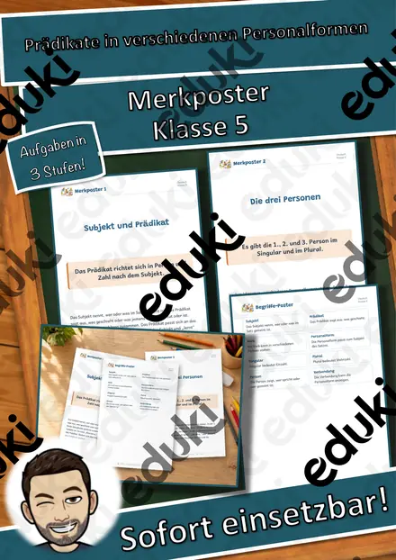
Prädikate in verschiedenen Personalformen – Merkposter (Klasse 5)

Lesespaziergang DaZ: Wir backen – Wortschatz mit Rätseln, 3-fach differenziert (Klasse 1–4)

Lesespaziergang DaZ: Spielen im Schnee – Wortschatz mit Rätseln, 3-fach differenziert (Klasse 1–4)

Lesespaziergang DaZ: Gemüse – Wortschatz mit Rätseln, 3-fach differenziert (Klasse 1–4)

Artikel im Rucksack: der, die, das mit Farbcode – Bastel-Rucksack, 24 Schulsachen, Hörübungen (DaZ, Klasse 1)

Lesespaziergang DaZ: Sankt Martin – Wortschatz mit Rätseln, 3-fach differenziert (Klasse 1–4)

3D-Anhänger Herbst – Oktaeder, Diamant und Kugel zum Ausmalen und Basteln, 3-fach differenziert (Klasse 3/4)
Keine Materialien gefunden – versuch einen anderen Suchbegriff oder Filter.